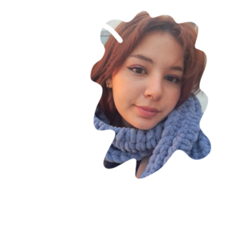

I'm a Turkish student who is into art in Istanbul. Born in 2003. Graduated from primary, secondary and high school in Istanbul. Now on my sophomore year I'm studying architecture as a student in Mimar Sinan Fine Arts University. My native language is Turkish and I'm level B2 in English. I don't have a complicated life-style, I am a powerfull person on etherealism since I'm sensational being more than logical side of me. I have always been open-minded when it's about other people's opinion and I think understanding others is mandatorily for living. However you have to know that you're coming first than others, you're the very first being should be heard from heart.